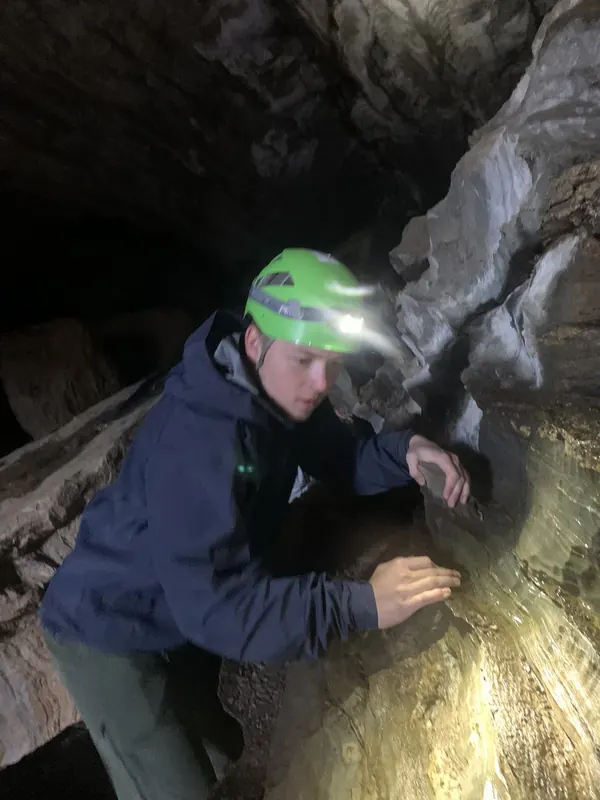
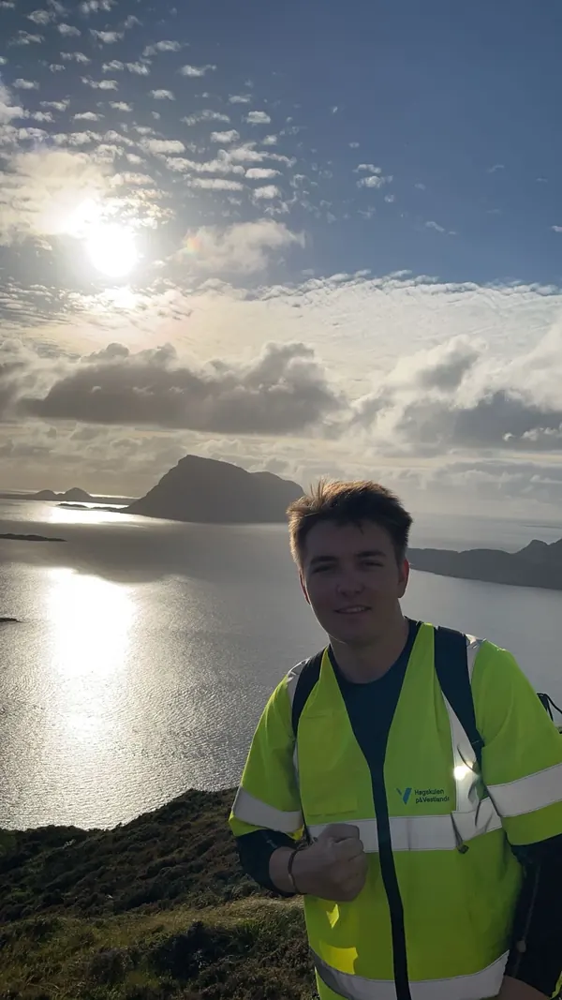
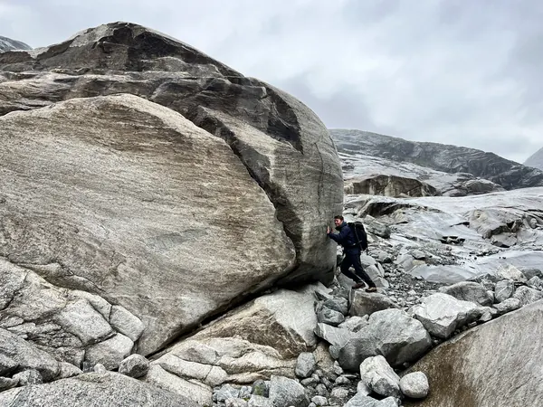

geolog
Vetle Øyvind Larsen Lunde
Bergvæg, brist med drøn og brag
for mit tunge hammerslag!
Nedad må jeg vejen bryde,
til jeg hører malmen lyde.
– Henrik Ibsen
↓ Scroll ned for å lese mer
Om meg
Hei, mitt navn er Vetle! Jeg er 23 år og kommer fra Stavanger.
Siden barndommen har jeg hatt en stor interesse for geologi. Ønsket om å forstå hvorfor landskapet ser ut slik som det gjør, har vært en viktig drivkraft i min interesse for faget.
I 2023 startet jeg på den treårige bachelorgraden Geologi og Geofare ved Høgskulen på Vestlandet i Sogndal. Studiet har gitt meg stor kunnskap og lærerike opplevelser gjennom både teoretisk undervisning og feltarbeid/ekskursjoner. Nå bygger jeg videre på kunnskapen jeg har opparbeidet meg ved å skrive en bacheloroppgave som avslutning på studiet.




Bakgrunn
Faglig bakgrunn
Bachelor i geologi og geofare – Sogndal 2023–2026
Jeg fullførte bachelorgraden i Geologi og geofare ved Høgskulen på Vestlandet i Sogndal i 2026. Studiet ga meg et solid fundament i geologi, med særlig vekt på geofare. Gjennom hyppig og omfattende feltarbeid opparbeidet jeg meg erfaring med geologisk kartlegging, datainnsamling og tolkning for å forstå komplekse geologiske systemer. Etter tre års studier avsluttet jeg graden med en bacheloroppgave om litologi og geokronologi i Trondheimsdekkekomplekset.
Oppnådd faglig kompetanse
| Emnekode | Emnenavn | Studiepoeng |
|---|---|---|
| Semester 1 | ||
| MA414 | Matematikk naturfag | 10 sp |
| GE406 | Geologi grunnkurs | 10 sp |
| GE413 | Kartlære og GIS | 10 sp |
| Semester 2 | ||
| FY400 | Innføring i fysikk | 10 sp |
| GE408 | Mineralogi og petrografi | 10 sp |
| GE436 | Sedimentologi | 10 sp |
| Semester 3 | ||
| GE414 | Strukturgeologi og tektonikk | 10 sp |
| GE407 | Anvendt geofysikk | 10 sp |
| GE486 | Glasialgeologi | 10 sp |
| Semester 4 | ||
| GE483 | Climate Change | 10 sp |
| GE484 | Geofare og skredkartlegging | 10 sp |
| GE481 | Ingeniørgeologi, geoteknikk og overvåkning av ustabile fjellsider | 10 sp |
| Semester 5 | ||
| GE482 | Hydrogeologi | 10 sp |
| ING202 | Programmering for ingeniører | 5 sp |
| ME420 | Statistikk | 10 sp |
| Semester 6 | ||
| GE448 | Snø og snøskred | 10 sp |
| ING301 | Datateknologi og videregående programmering for ingeniører | 5 sp |
| GE491 | Bacheloroppgave i geologi | 20 sp |

Master i geologi – Trondheim 2026–2028
Kommer ...
Oppnådd faglig kompetanse
| Emnekode | Emnenavn | Studiepoeng |
|---|---|---|
| Semester 1 | ||
| TPG4175 | Petrofysikk – Borehullslogging, grunnkurs | 7,5 sp |
| TGB4266 | Tektonikk | 7,5 sp |
| TGB4265 | Strukturgeologi, videregående kurs | 7,5 sp |
| TPG4255 | Geomekanikk for CO₂-lagring | 7,5 sp |
| Semester 2 | ||
| Kommer snart ... | ||
Jobberfaring
Vaktsoldat – Akershus Festning
Tjenestegjorde som vaktsoldat ved Akershus festning i Oslo. Her jobbet vi med å ivareta sikkerhet gjennom døgnkontinuerlig vakthold. Hovedoppgavene inkluderer portvakt, streifvakter (patruljering) og flaggpost, samt bistand ved arrangementer. Tjenesten innebar tett kontakt med sivile på en av Oslo's største turistattraksjoner.
Renovasjonen IKS
Som en sommerjobb i coronatiden jobbet jeg med avfallshåndtering, både husholdning, elektronisk og annet diverse. Jobben startet tidlig og innebar mye fysisk arbeid, samt samhandling med kollegaer.